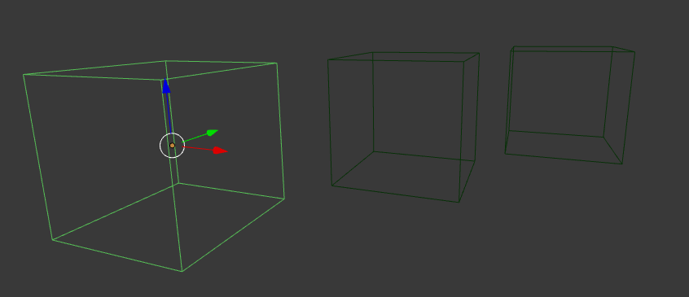
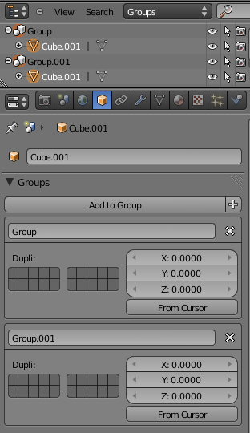

群组¶
在一个场景中可以有多个对象: 一个典型的舞场景包括家具、 道具、 灯光、 背景。Blender 可以帮助您保持一切组织通过允许你像对象组在一起。

Grouped objects.
Group objects together without any kind of transformation relationship. Use groups to just logically organize your scene, or to facilitate one-step appending or linking between files or across scenes. Objects that are part of a group always shows as light green when selected. See Fig. Grouped objects..
Groups Panel¶
参考
模式: 物体模式
Panel:

Group panel and Outliner.
All groups that an object has been assigned to are listed in the Properties editor .
- Add to Group
- Adds the selected objects from a group. A pop-up lets you specify the group to add to.
- New
+ - Creates a new group and adds the selected object(s) to it.
- Name
- To rename a group, simply click in the groups name field.
- Remove
X - To remove an object from a group,
find the name of the group from which you wish to remove the object,
and click the
Xto the right of the group name. - Specials
- Unlink Group, Select Group, Set Offset From Cursor
- Dupligroup Visibility
- Restricting Group Contents via Layers The cluster of layer buttons attached to each group determines from which layers the group objects will be included when duplicated. If your group contains objects on layers 10, 11 and 12, but you disable the layer 12 button in the group controls, duplicates of that group (using the Dupligroup feature) will only show the portions of the group that reside in layers 10 and 11.
- Offset
- ToDo.
See also
Appending or Linking Groups
To append a group from another blend-file, consult this page. In summary, Select a blend-file and, and then the group.